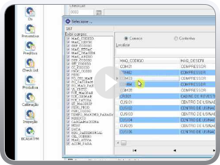
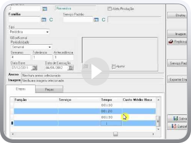
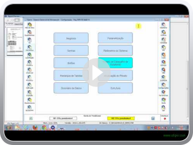
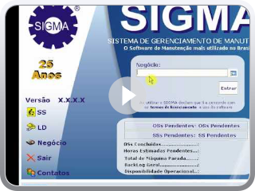
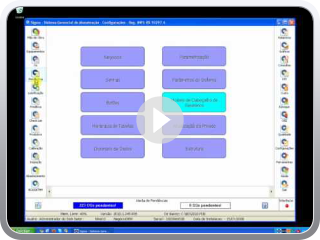
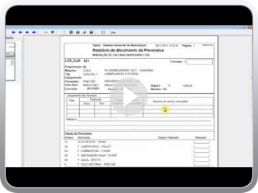
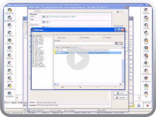
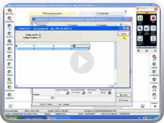
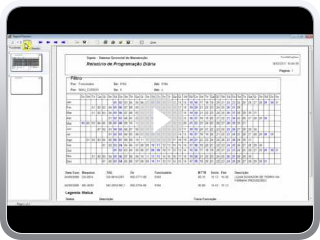

Módulo Checklist - Manutenção Baseada na Condição
MTTR das etapas da preventiva por Davi Utzig.FLV
Modelos de impressão para OS preventivas
Alerta de Programaçoes de Manutenção
Programação de OS's Preventivas por antecedência
Módulo Produtiva - Manutenção por Horas trabalhadas ou kilômetros rodados
Replicagem de programações Preventivas por Familia
Manutenção Preditiva no Sigma
Programação Diária de Ordens de Serviço
Adding Video to Blog by VideoLightBox.com v2.1